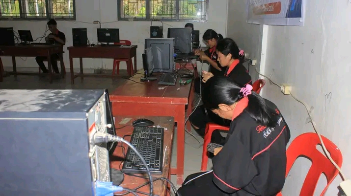
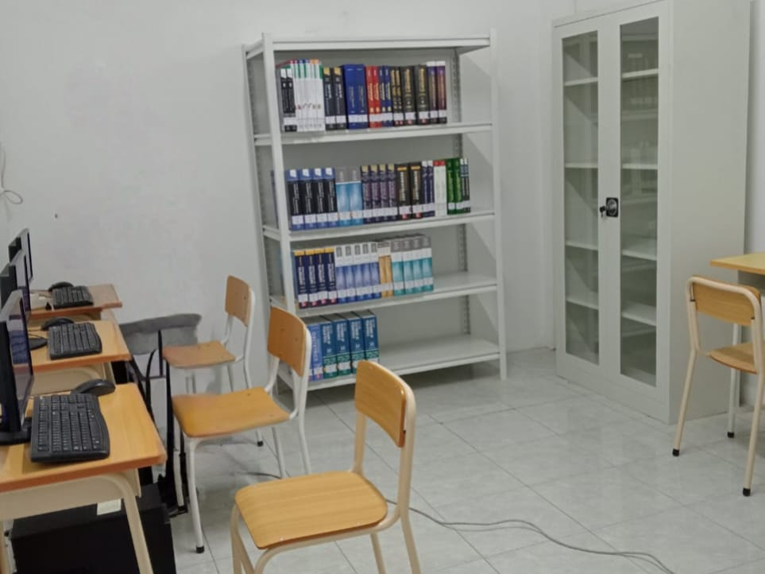
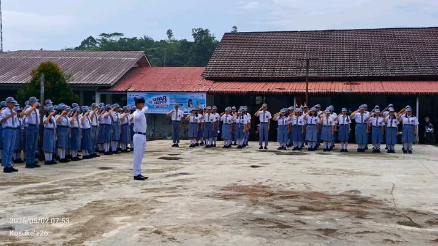

Sarana & Fasilitas Sekolah
Infrastruktur modern pendukung kenyamanan dan kelancaran proses belajar praktik siswa

Laboratorium Komputer & Jaringan
Ruang praktik yang dilengkapi komputer spesifikasi tinggi, perangkat jaringan (router, switch, server), dan koneksi internet cepat untuk mendukung simulasi administrasi jaringan.

Laboratorium Simulasi Perkantoran
Ruangan yang dirancang menyerupai layout tempat kerja modern guna melatih keterampilan siswa dalam manajemen arsip digital, komunikasi bisnis, dan otomatisasi perkantoran.

Perpustakaan & Ruang Baca
Menyediakan koleksi buku cetak, modul pembelajaran kejuruan, serta komputer akses jurnal digital sebagai pusat literasi mandiri siswa dan guru dalam suasana yang tenang.

Lapangan Olahraga & Upacara
Area luar ruangan serbaguna yang representatif untuk mendukung aktivitas pembinaan jasmani, kegiatan ekstrakurikuler, serta pelaksanaan upacara bendera berkala.